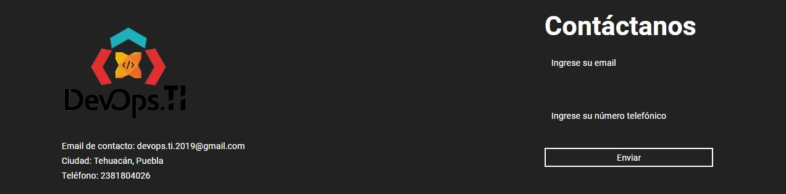
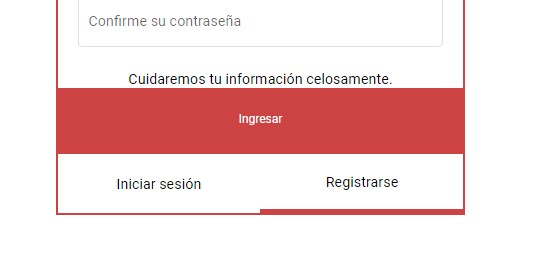

Para comenzar a disfrutar de nuestros servicios puede enviar sus datos de contacto en el formulario ubicado en el pie de página. Ambos campos son obligatorios, para tener un mejor control de sus datos.
Una vez que haya enviado sus datos, nuestro equipo de contacto se encargará de comunicarse con usted para los trámites necesarios para la contratación del servicio.
Cuando haya realizado en contrato con nuestro equipo, de contacto usted podrá realizar una cuenta, en la que podrá acceder de la siguiente manera. Primero de click en la pestaña iniciar sesión, luego vaya a la pestaña registrarse, en la que todos los campos en el formulario son obligatorios.
Una vez que haya realizado su registro, será enviado a su correo electrónico un mail de verificación de cuenta para que su usuario sea validado.
Cuando ya tenga una registrada una cuenta en el sitio web podrá ingresar al sistema de TaxiMex. Primero vaya al enlace iniciar sesion.
Ingrese sus datos y de click al boto ingresar. Una vez ingresado podrá disfrutar de los servicios de TaxiMex.
class="font-Roboto"Dentro del sistema Taximex podrá encontrar de inmediato las gráficas de su negocio, las cuales al momento de entrar aparecerán vacías.